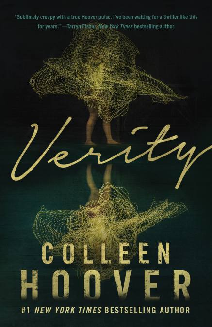

Verity

Lowen Ashleigh is a struggling writer on the brink of financial ruin when she accepts the job offer of a lifetime.
Jeremy Crawford, husband of bestselling author Verity Crawford, has hired Lowen to complete the remaining books
in a successful series his injured wife is unable to finish.
Lowen arrives at the Crawford home, ready to sort through years of Verity's notes
and outlines, hoping to find enough material to get her started. What Lowen doesn't expect to uncover in the chaotic
office is an unfinished autobiography Verity never intended for anyone to read. Page after page of bone-chilling admissions, including Verity's
recollection of what really happened the day her daughter died.